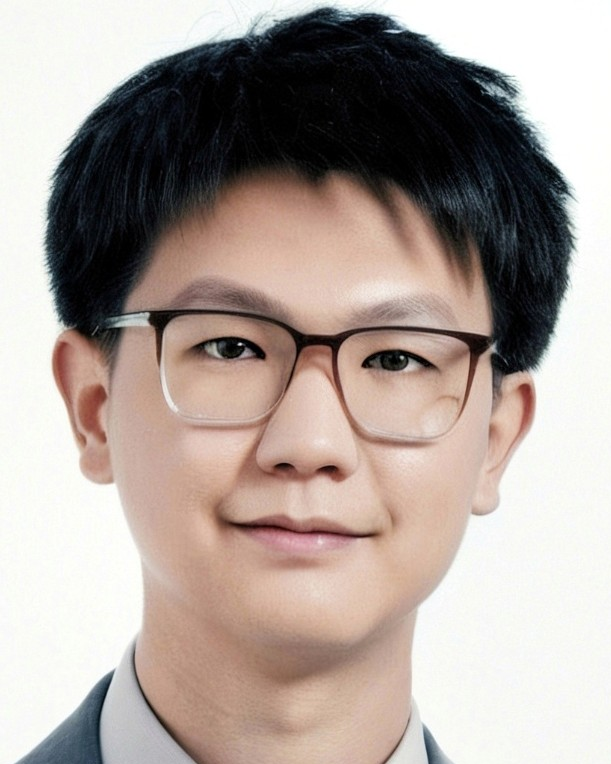
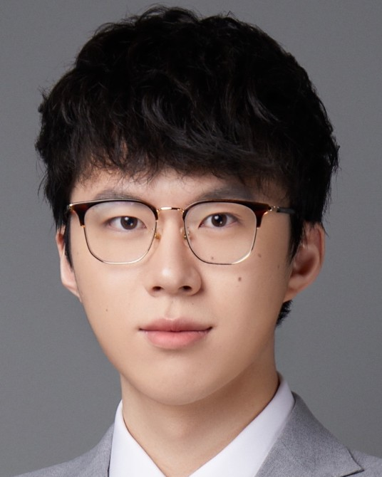
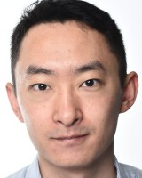

刘逸伦
Yilun Liu
慕尼黑大学博士生
慕尼黑机器学习中心研究员
慕尼黑机器学习中心研究员
慕尼黑工业大学硕士
西安交通大学少年班学士
西安交通大学少年班学士
代表成果
MGM · Routing-Free MoE · PERFT
MGM · Routing-Free MoE · PERFT
AI for Agentic AI
Second Foundation
我们专注记忆、可信经验与递归自我改进，
为下一代 Agentic AI 建造可积累的基础设施。
真正的问题将不再是「一个模型能不能答对」，而是关于 这些 Agent 如何持续学习、如何交换经验、如何在彼此之间可靠协作。
随身场景里的调度与决策；把「用过」沉淀成「会了」。
跨工具复用成功路径，而不是每次从零探索。
可治理的经验共享，与安全的递归改进。
我们长期深耕 Memory、多智能体系统与 Recursive Self-Improvement。



记忆不是旁路缓存，而是可学习、可验证、可沉淀为系统能力的基础设施： 让 Agent 会管记忆，并在长时程中做 公平归因。
两个 RL Agent 协同。 Memory Manager 学会 ADD / UPDATE / DELETE / NOOP； Answer Agent 从检索结果中蒸馏出最小充分上下文。
全局轨迹 + 同状态局部重采样。 固定中间记忆状态，只比较当前记忆操作，让跨 session 信用分配更公平。
从「单次失败轨迹驱动的单点修改」，推进到基于谱系与任务对照的 比较式演化。 归档中的每一次评测，都成为下一轮自我修改的证据。
复用归档轨迹做更信息丰富的自我修改；不增加额外任务评测与 token，持续显著优于单轨迹基线。
SWE-bench Verified-60
Performance
Relative improvement
Polyglot-60
Performance
Relative improvement
未来 agent 框架有望依托规模更小的数据集、成本更低的基模实现高效迭代，并能无缝迁移适配性能更强的大模型。
Polyglot 上演化的脚手架，可零样本迁移到 SWE-bench Pro / Multilingual， 说明改进是可复用的工作流能力，而非单基准 hack。
在较小开源骨干上演化的脚手架，切换到更强模型后仍显著增益。 便宜骨干上发现的改进，可以服务更强模型。
Cross-benchmark
Polyglot → SWE-bench Pro & Multilingual
Average Performance
Relative improvement
Cross-model
Qwen3.6-35B → DeepSeek-V4 Flash & Pro
Average Performance
Relative improvement
Second Foundation 相信：下一代智能基础设施，不是再造一个更大的聊天模型，
而是让每一个 Agent 都能沉淀经验、验证改进、并与其他 Agent 协作变强。